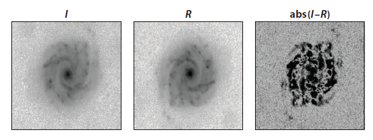
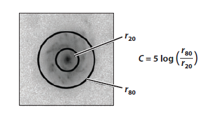
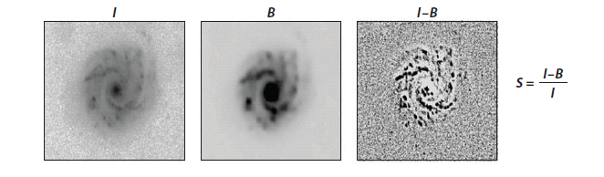

Nonparametric Measurements
A more recent measurement technique involves the nonparametric method of measuring galaxy light distributions
Parametric vs Nonparametric Measurements
Parametric
- Assumptions about the underlying form
- Difficult to measure at higher redshifts,
Nonparametric
- Does not involve assumptions about the underlying form
- Measurable out to high redshifts,
CAS parameters
The CAS (concentration, asymmetry, smoothness) parameters were originally developed in astronomy to classify the shapes and images of objects with some central concentration. Each parameter consists of a single integer that indicates a different feature of the structure of the thing being studied.
Asymmetry (A)
The asymmetry index is a measure of how symmetric an object is. measure of how asymmetric a galaxy is after rotating along the line-of-sight center axis of the galaxy by 180◦.
The basic formula for calculating the asymmetry index (A) is given by: $$ \color{#e44c65} A=\min \left(\frac{\Sigma\left|I_0-I_{180}\right|}{\Sigma\left|I_0\right|}\right)$$ where $I_{0}$ represents the original galaxy image and $I_{180}$ is the image after rotating it from its center by 180◦. We also have to take care of the background noise in the same way as is done on the galaxy itself. Conselice et al. 2003
Concentration (C)
The concentration of light quantifies howmuch light is in the center of a galaxy as opposed to its outer parts.
There are numerous methods for determining the concentration, such as comparing the ratios of each containing a specific amount of light or the ratio of the amount of light at two specified radii. The ratio that includes an inner and outer percentage of the total galaxy flux is the most frequently used. $$\color{#e44c65}C=5 \times \log \left(\frac{r_{\text {outer }}}{r_{\text {inner }}}\right)\color{#e44c65}$$ A higher value of C indicates that a larger amount of light in a galaxy is contained within a central region. Conselice et al. 2003
Smoothness (S)
The smoothness (also called clumpiness) is a measure of the fraction of light in an object which is in small scale structures. Smooth systems, like elliptical galaxies, contain light at low spatial frequencies, whereas clumpy galaxies have a relatively substantial amount of light at high spatial frequencies. There are several ways to measure clumpiness; the most popular one is: $$ \color{#e44c65}S=10 \times \left(\frac{\Sigma\left(I_{x, y}-I_{x, y}^\sigma\right)}{\sigma I_{x, y}}\right) $$ where the original image, $I_{x,y}$ , is blurred to produce a secondary image, $I^{\sigma}_{x,y}$. This blurred image is then subtracted from the original image, leaving a residual map containing only high-frequency structures in the galaxy. The size of the smoothing kernel $\sigma$ is determined by the radius of the galaxy. Conselice et al. 2003
Gini/$M_{20}$ parameters
The Gini coefficient (G) is a statistical technique first used in economics to assess how wealth is distributed among a population; larger values denote a highly unequal distribution (a Gini of 1 signifies all light is contained in one pixel), while a lower value denotes a more equitable distribution (Gini of 0 means every pixel has an equal share).
A galaxy in this case is considered a system with n pixels, each with a flux $f_i$, where i ranges from 0 to n. The Gini coefficient is then measured by $$\color{#e44c65} \mathrm{G}=\frac{1}{|\bar{f}| n(n-1)} \sum_i^n(2 i-n-1)\left|f_i\right|\color{#e44c65} $$
The value of $M_{20}$ is the moment of the fluxes of the brightest 20% of light in a galaxy, which is then normalized by the total light moment for all pixels Lotz et al. 2004. $$ \color{#e44c65} M_{20}=\log 10\left(\frac{\sum_i M_i}{M_{\text {tot }}}\right)$$, while $\sum_i f_i < 0.2 f_{\text {tot }}$, where the value of $M_{\text {tot }}$ is $$ \color{#e44c65} M_{\mathrm{tot}}=\sum_i^n M_i=\sum_i^n f_i\left[\left(x_i-x_{\mathrm{c}}\right)^2+\left(y_i-y_{\mathrm{c}}\right)^2\right] $$ here $x_c$ and $y_c$ indicate the center of the galaxy, and in the case of $M_20$ this center is defined as the location where the value ofMtot is minimized Lotz et al. 2004